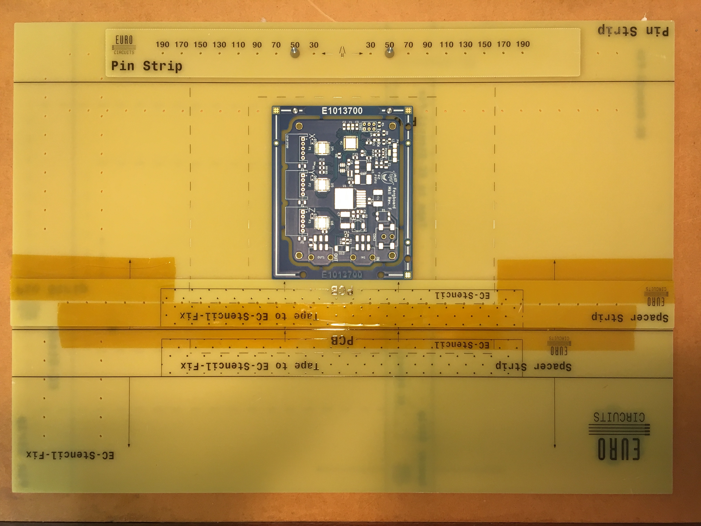
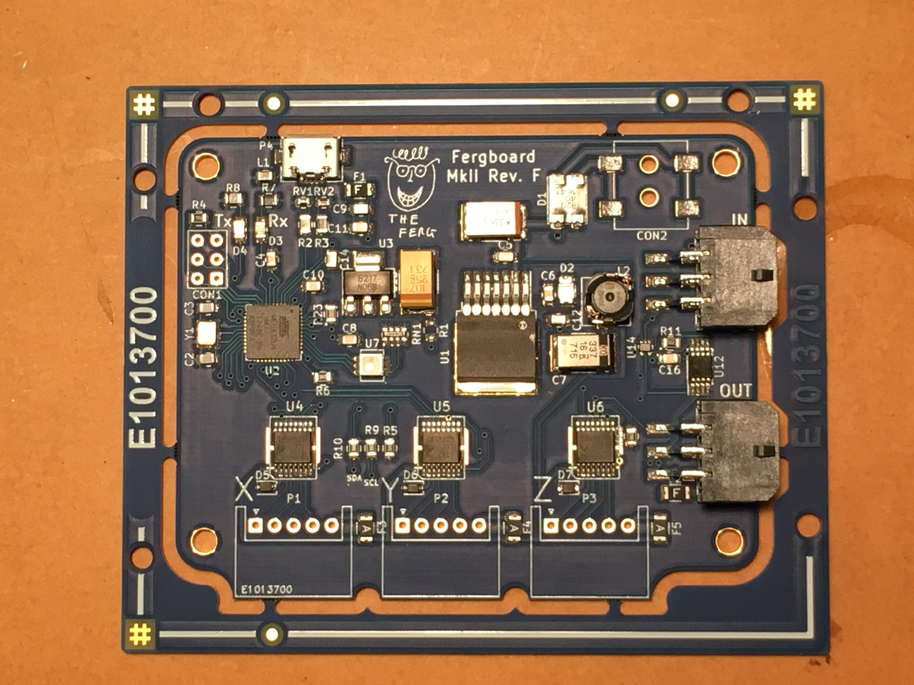
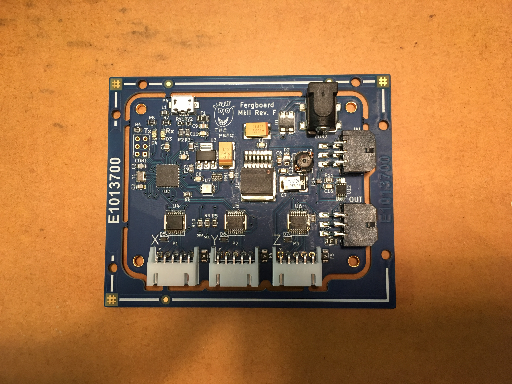

Assembly Instructions
You will need:
- 1 DaisyDriver PCB
- (optional) 1 DaisyDriver solder stencil
- 1 BoM, as listed in the DaisyDriver design files
- 200 ml Isopropanol
- Solder paste
- 2 hotplates capable of maintaining temperatures of 50℃ to 400℃
- 1 steel or aluminium plate large enough to support the DaisyDriver
- 2 pairs of spade tipped tweezers
- 1 pair safety glasses
- 1 pair heat resistant gloves
Soldering Procedure
- Set one hotplate next to the other and ensure the tops are clean and free from distortion. Turn one on to 100℃, and the other to 350℃. Allow ample time for them to come to temperature.
- Apply solder paste using either a stencil or an applicator syringe. A stencil is recommended due to the high accuracy of paste deposition it offers, as well as the superior evenness of the applied paste thickness. 
- Place surface mount components on the board, noting that slight errors in the positions of the components will generally be corrected by the surface tension of the solder at reflow. 
- Wearing the safety gloves and glasses, position the metal plate on the 100℃ plate, and allow it to come to temperature. Note that thermal distortion of the plate may initially occur, which can be corrected by pressing down on the corners of the plate with the tweezers.
- Once the plate has come to temperature, place the PCB on it and wait for up to two minutes for it to heat up. During this time, thermal distortions can be corrected by pushing gently on the corners of the PCB, in the same manner as step 4. The solder paste may change slightly in appearance, and the flux may activate.
- Once the PCB has come to temperature on the 100℃ metal plate, transfer the PCB on the metal plate to the 350℃ hotplate. Correct thermal distortions as before, and observe the pads of the PCB carefully. The solder paste should begin to melt within 2 minutes, and be fully molten within 3. Any pads that do not reflow within 3 minutes can be corrected by hand using a rework station. Take care also that the silkscreen is not scorched before the PCB reflows; if this occurs, then a redesign of the board may be necessary.
- Transfer the PCB and the metal plate back to the 100℃ hotplate for approximately one minute and then to a wire rack. This step is to avoid thermal shock to the components. Once the PCB has cooled to around 50℃, the metal plate can be safely extracted.
- Repeat steps 1-7 with all further PCBs to be soldered, then turn off the hotplates and allow them to cool. Wash the PCBs with isopropanol and allow to dry.
- Solder any remaining through-hole components in by hand. 